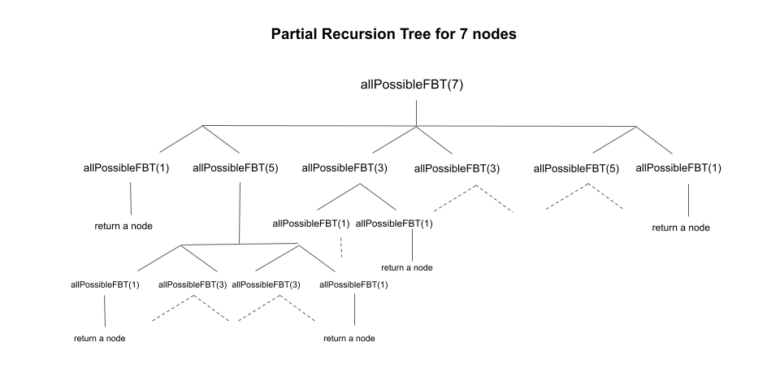

Given an integer n, our task is to return a list of root nodes of all possible full binary trees with
n nodes.
As stated in the description, each node in a full binary tree has either 0 or 2 children.
Because there is a root node, a full binary tree will always have an odd number of nodes (root node
+ even child nodes).
To find all the possible permutations of full binary trees with n nodes, we can use one node as the
root node and split the other n - 1 nodes between the left and right subtrees in all
possible ways. Let us say we place i nodes in the left subtree and n - i - 1 in the right
subtree.
Now, we create a list of root nodes called left for all possible full binary trees that can be formed
using i nodes. Similarly, we create a list of root nodes called right for all the full
binary trees using n - i - 1 nodes. We can now create a new full binary tree by choosing one element
from left to be the left child and one element from right to be the right child. To
generate all full binary trees, we will iterate over all pairs between left, right.
As we know any full binary tree must have an odd number of nodes, i and n - 1 - i should be
odd as well to form full binary trees that are being used as the left and right subtrees. As a result, we move the
value of i from i = 1 till n - 1 incrementing i by
2 each time so that we just loop on odd numbers of i. Since we have odd n and
odd i, n - 1 - i would also be an odd number.
Notice that generating the lists left and right is the same as the original problem, just
with a different value of n. We can implement this approach using recursion as we are breaking down a
problem with n nodes to smaller, repetitive subproblems with i and n - i - 1
nodes (for i = 1 till n - 1, incrementing i by 2) to compute the
answer for n nodes.
We can convert the given method allPossibleFBT in the implementation into a recursive function as we
only need the number of nodes as the parameter to create a list of nodes for all possible full binary tree using
recursion. Here is a visual representation of the recursion tree with 7 nodes:

Several subproblems, such as allPossibleFBT(3), allPossibleFBT(5), etc., are solved
multiple times in the partial recursion tree shown above. If we draw the entire recursion tree, we can see that
there are many subproblems that are solved repeatedly.
To avoid this issue, we store the solution of the subproblem in a hashmap that stores the mapping from the number of
nodes to the list of root nodes of all possible full binary trees that can be formed with the same number of nodes.
When we encounter the same subproblem again, we simply refer to this map to get the required list of
TreeNode. This is called memoization.
memo where memo[i] contains the list of root nodes of all possible
full binary trees with i nodes.
n is even, we return an empty list as we cannot form any full binary tree with even number of
nodes.
n == 1, we simply return a list with single node.memo contains the key n, we return
memo[n].
n. We declare a list of TreeNode called res to store the list
of root nodes of all possible full binary trees with n nodes.
i = 1 to n - 1 incrementing i by 2 after each
iteration:
TreeNode called left to store the root nodes for all possible
full binary trees using i nodes. We perform left = allPossibleFBT(i).
TreeNode called right to store the root nodes for all
possible full binary trees using n - 1 - i nodes. We perform right = allPossibleFBT(n
- i - 1).
left and right using two loops. For each element
count in left and r in right, we create a new root
node and set root.left = l and root.right = r. We add root into
our answer variable res.
memo[n] equal to res.res.
Java
/**
* Definition for a binary tree node.
* public class TreeNode {
* int val;
* TreeNode left;
* TreeNode right;
* TreeNode() {}
* TreeNode(int val) { this.val = val; }
* TreeNode(int val, TreeNode left, TreeNode right) {
* this.val = val;
* this.left = left;
* this.right = right;
* }
* }
*/
class Solution {
private Map> memo = new HashMap<>();
public List allPossibleFBT(int n) {
if (n % 2 == 0) {
return new ArrayList();
}
if (n == 1) {
return Arrays.asList(new TreeNode());
}
if (memo.containsKey(n)) {
return memo.get(n);
}
List res = new ArrayList();
for (int i = 1; i < n; i += 2) {
List left = allPossibleFBT(i);
List right = allPossibleFBT(n - i - 1);
for (TreeNode l : left) {
for (TreeNode r : right) {
TreeNode root = new TreeNode(0, l, r);
res.add(root);
}
}
}
memo.put(n, res);
return res;
}
}
C++
/**
* Definition for a binary tree node.
* struct TreeNode {
* int val;
* TreeNode *left;
* TreeNode *right;
* TreeNode() : val(0), left(nullptr), right(nullptr) {}
* TreeNode(int x) : val(x), left(nullptr), right(nullptr) {}
* TreeNode(int x, TreeNode *left, TreeNode *right) : val(x), left(left), right(right) {}
* };
*/
class Solution {
public:
unordered_map> memo;
vector allPossibleFBT(int n) {
if ((n % 2) == 0) {
return {};
}
if (n == 1) {
return {new TreeNode()};
}
if(memo.find(n) != memo.end()) {
return memo[n];
}
vector res;
for (int i = 1; i < n; i += 2) {
vector left = allPossibleFBT(i);
vector right = allPossibleFBT(n - i - 1);
for (auto l : left) {
for (auto r : right) {
TreeNode* root = new TreeNode(0, l, r);
res.push_back(root);
}
}
}
return memo[n] = res;
}
};
Python3
# Definition for a binary tree node.
# class TreeNode:
# def __init__(self, val=0, left=None, right=None):
# self.val = val
# self.left = left
# self.right = right
class Solution:
def allPossibleFBT(self, n: int) -> List[TreeNode]:
if n % 2 == 0:
return []
if n == 1:
return [TreeNode()]
res = []
for i in range(1, n, 2):
left = self.allPossibleFBT(i)
right = self.allPossibleFBT(n - i - 1)
for l in left:
for r in right:
root = TreeNode(0, l, r)
res.append(root)
return res
Note, the time and space complexity of this problem is difficult to derive exactly. In an interview, do your best to calculate an upper bound while explaining your thought process.
Time complexity: O(2n/2)O(2^{n/2}).
n nodes
is n - 2, since one node is the root of the tree and one node must be in the right subtree.
Therefore, the total number of possible full binary trees with n nodes can be calculated by
considering all possible combinations of the number of nodes in the left and right subtrees, such that
the sum of the number of nodes in the left and right subtrees is equal to n - 1.
n nodes as a recurrence
relation T(n) = T(1) * T(n - 2) + T(3) * T(n - 4) + ... + T(n - 2) * T(1), where the
summation goes over all odd numbers from 1 to n - 2. Solving this recurrence
relation using dynamic programming shows that T(n) is equal to the nthn^{th}
Catalan number, which is
bounded by 2n/22^{n/2}.
Space complexity: O(n⋅2n/2)O(n \cdot 2^{n/2}).
memo to store the results of subproblems that have already been solved.
n nodes, the algorithm may need to store up to 2n/22^{n/2}
TreeNode objects in the memo hash map. This is because there can be up to
2n/22^{n/2}
possible full binary trees with n nodes, and the algorithm needs to store all of them in
order to return the result for the subproblem with n number of nodes. There are maximum of
n/2 subproblems (with nodes 1, 3, .. n - 1) and
hence the space complexity of the algorithm is O(n⋅2n/2)O(n \cdot 2^{n/2}).
We used memoization in the preceding approach to store the answers to subproblems in order to solve a larger problem. We can also use a bottom-up approach to solve such problems without using recursion. We build answers to subproblems iteratively first, then use them to build answers to larger problems.
We create a list dp[n + 1] where dp[i] will store a list of root nodes for all possible
full binary trees using i nodes. This is analogous to what memo[i] was in the previous
approach.
We push a single node to dp[1] which acts as the base case.
We form the answer with a smaller number of nodes and move on to form answers for a bigger number of nodes. We run an
outer loop from count = 3 to count = n incrementing count by 2
after each iteration. This loop controls the total number of nodes count under consideration. Please
keep in mind that we are only iterating over odd numbers of nodes because the answer for even numbers of nodes is an
empty list. Note that here, count represents n in the previous approach. We have to use a
different variable name since we are now implementing the algorithm iteratively and n is static per
test case.
To get the list of root nodes for all possible full binary trees with count nodes, we would split the
count nodes with i nodes in the left subtree and count - i - 1 in the right
subtree in the same manner as described previously. As we are executing in bottom-up manner, we will already have
the list of root nodes for all possible full binary trees with i and count - i - 1 nodes.
We create a new instance of TreeNode called root and set the left child of
root to an element in dp[i] and set the right child of root to an element in
dp[l - i - 1] to form a new full binary tree with count nodes. We will iterate over all
the elements in dp[i] and dp[count - i - 1] to form all the full binary trees in this
split.
We would run an inner loop to move i from 1 to count - 2 (one node is used as
root, count - 2 nodes are used in the left subtree, leaving at least one node for the right subtree)
incrementing i by 2 to split the count nodes in all the possible ways between
the left and right subtree.
n is even, we return an empty list as we cannot form any full binary tree with even number of
nodes.
dp[n + 1] where dp[i] will store a list of root nodes for all possible
full binary trees using i nodes. We initialize each list dp[i] to an empty list for
i = 0 to n.
dp[1] because with n = 1 we can just have a root node in
the tree.
count = 3 till count = n incrementing count by
2 after each iteration. The outer loop corresponds to the total number of nodes under
consideration. We start an inner loop from i = 1 to count - 2 incrementing
i by 2 which represents the number of nodes in the left subtree under consideration.
We perform the following in this loop:
j = n - i - 1. It presents the number of nodes in the right subtree under
consideration.
dp[i] and right child to any element in dp[j]. As
a result, we iterate over both the lists dp[i] and dp[j] using two loops. For
each element left in dp[i] and right in dp[j], we
create a new root node and set root.left = left and root.right =
right to form all the full binary trees in this split. We add root to dp[count].
dp[n].
Java
/**
* Definition for a binary tree node.
* public class TreeNode {
* int val;
* TreeNode left;
* TreeNode right;
* TreeNode() {}
* TreeNode(int val) { this.val = val; }
* TreeNode(int val, TreeNode left, TreeNode right) {
* this.val = val;
* this.left = left;
* this.right = right;
* }
* }
*/
class Solution {
public List allPossibleFBT(int n) {
if (n % 2 == 0) {
return new ArrayList<>();
}
List> dp = new ArrayList<>();
for (int i = 0; i <= n; i++) {
dp.add(new ArrayList<>());
}
dp.get(1).add(new TreeNode(0));
for (int count = 3; count <= n; count += 2) {
for (int i = 1; i < count - 1; i += 2) {
int j = count - 1 - i;
for (TreeNode left : dp.get(i)) {
for (TreeNode right : dp.get(j)) {
TreeNode root = new TreeNode(0, left, right);
dp.get(count).add(root);
}
}
}
}
return dp.get(n);
}
}
C++
/**
* Definition for a binary tree node.
* struct TreeNode {
* int val;
* TreeNode *left;
* TreeNode *right;
* TreeNode() : val(0), left(nullptr), right(nullptr) {}
* TreeNode(int x) : val(x), left(nullptr), right(nullptr) {}
* TreeNode(int x, TreeNode *left, TreeNode *right) : val(x), left(left), right(right) {}
* };
*/
class Solution {
public:
vector allPossibleFBT(int n) {
if (n % 2 == 0) {
return {};
}
vector> dp(n + 1);
dp[1].push_back(new TreeNode(0));
for (int count = 3; count <= n; count += 2) {
for (int i = 1; i < count - 1; i += 2) {
int j = count - 1 - i;
for (auto left : dp[i]) {
for (auto right : dp[j]) {
TreeNode* root = new TreeNode(0, left, right);
dp[count].push_back(root);
}
}
}
}
return dp[n];
}
};
Python3
# Definition for a binary tree node.
# class TreeNode:
# def __init__(self, val=0, left=None, right=None):
# self.val = val
# self.left = left
# self.right = right
class Solution:
def allPossibleFBT(self, n: int) -> List[TreeNode]:
if n % 2 == 0:
return []
dp = [[] for _ in range(n + 1)]
dp[1].append(TreeNode(0))
for count in range(3, n + 1, 2):
for i in range(1, count - 1, 2):
j = count - 1 - i
for left in dp[i]:
for right in dp[j]:
root = TreeNode(0, left, right)
dp[count].append(root)
return dp[n]
Time complexity: O(2n/2)O(2^{n/2}).
n nodes (where n is an odd number) and the
algorithm generates all of them without solving any subproblem twice. The time complexity is similar to
the previous approach.
Space complexity: O(n⋅2n/2)O(n \cdot 2^{n/2}).
memo hash map used in the previous approach, dp[i] will store
the list of root nodes for all possible full binary trees with i nodes. As there can be a
maximum of 2n/22^{n/2}
possible full binary trees with n nodes, dp will consume O(n⋅2n/2)O(n \cdot 2^{n/2}) space to store the list of nodes
corresponding to all the number of nodes from 1 to n.